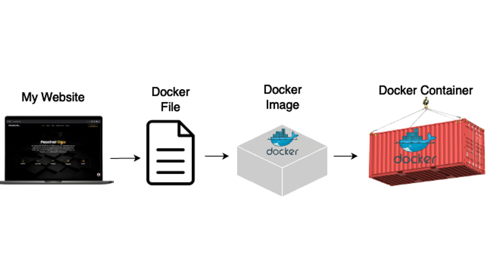

Containerization#
In order to deploy our code to the AI builder platform and produce a solution.zip file, we need to containerize our service (or application). We will be using Docker for the containerization.
Containerization using Docker#
Containerization involves encapsulating an application and its dependencies into a self-contained unit called a container. This process begins by defining the application environment and specifying its dependencies, including libraries, frameworks, and runtime components.
In the realm of containerization, Docker serves as a powerful tool for building, running, and managing containers across various environments, including servers and the cloud. Docker is a containerization platform that allows developers to package an application and its dependencies into a standardized unit called a container.
Using Docker for containerization, developers create a Dockerfile or a similar configuration file that outlines the steps needed to build the container image. In this Dockerfile, developers specify the base image to use, copy the application code into the image, and configure any additional settings or dependencies required for the application to run.
In the image below you can see the basic steps of containerizing your application using docker. You take your application and write a dockerfile based on it. A Dockerfile is a text file containing a series of instructions for assembling a Docker image. A Docker image is a lightweight, standalone, and executable package that includes everything needed to run a piece of software, such as code, runtime, libraries, and dependencies. A Docker image is created by reading the instructions in the Dockerfile, and it serves as a template for creating Docker containers. A Docker container is an instance of a Docker image that runs as an isolated process on the host machine, encapsulating the application and its environment. Together, Dockerfiles, Docker images, and Docker containers enable consistent and efficient application deployment across various environments.

With Docker, you can use the Docker build command to build the container image based on the instructions provided in the Dockerfile. Docker provides a simple and efficient way to build, distribute, and run containerized applications, making it a popular choice for containerization.
Writing a dockerfile#
Let’s take a look at a dockerfile:
# Use an official Node.js runtime as the base image
FROM node:14
# Set the working directory inside the container
WORKDIR /app
# Copy package.json and package-lock.json to the working directory
COPY package*.json ./
# Install dependencies using npm
RUN npm install
# Copy the rest of the application code to the working directory
COPY . .
# Expose port 3000 to the outside world
EXPOSE 3000
# Define the command to run the application when the container starts
CMD ["node", "app.js"]
Above you see a very simple dockerfile. Let’s go through the different parts of the file.
FROM node:14: Specifies the base image for the Dockerfile. In this case, it uses the official Node.js image from Docker Hub with Node.js version 14.
WORKDIR /app: Sets the working directory inside the container where subsequent commands will be executed. It creates the /app directory if it doesn’t exist.
COPY package*.json ./: Copies the package.json and package-lock.json files from the host machine (where the Dockerfile is located) to the /app directory inside the container. This allows Docker to cache dependencies during the build process.
RUN npm install: Runs the npm install command inside the container to install dependencies listed in package.json. This step is executed during the image build process.
COPY . .: Copies the rest of the application code from the host machine to the /app directory inside the container. This includes source code, configuration files, and any other assets required by the application.
EXPOSE 3000: Informs Docker that the container will listen on port 3000 at runtime. This does not actually publish the port; it serves as a documentation of the intended port usage.
CMD [“node”, “app.js”]: Specifies the command to run when the container starts. In this case, it runs the Node.js application using the app.js file as the entry point.
This Docker file is made for a node application. The procedure of writin the Docker file is fortunately still quite similar even if you’re working with some other programming language such as python.
Docker-compose#
Docker Compose is a tool that simplifies the management of multi-container Docker applications by allowing you to define and orchestrate all services, networks, and volumes in a single docker-compose.yaml file. It streamlines the process of setting up, running, and scaling containerized applications, ensuring consistency across different environments. By using Docker Compose, developers can easily manage the interactions and dependencies between multiple containers, facilitating efficient development, testing, and deployment workflows.
Purpose and Benefits#
Docker Compose is particularly useful in development, testing, and CI/CD environments where you need to manage multiple interdependent services, like in our case where we have multiple containers that work together to create a pipeline. Instead of starting each container individually and managing the networking and volumes manually, Docker Compose handles this automatically based on the specifications in the docker-compose.yaml file. This not only simplifies the process but also ensures that the entire environment can be easily reproduced, which is crucial for maintaining consistency across different stages of development and deployment.
Structure of docker-compose.yaml#
A docker-compose.yaml file typically contains the following sections:
services: Defines the services (containers) that make up the application. Each service specifies its build context, image, ports, environment variables, and other configurations.
networks: Defines custom networks for the services to communicate with each other.
volumes: Specifies volumes to persist data outside the container lifecycle.
example docker-compose.yaml file#
Here’s an example of a simple docker-compose.yaml file:
services:
web:
build: ./web
ports:
- "8000:8000"
depends_on:
- db
networks:
- my-network
db:
image: postgres:latest
environment:
POSTGRES_DB: exampledb
POSTGRES_USER: exampleuser
POSTGRES_PASSWORD: examplepass
networks:
- my-network
networks:
my-network:
driver: bridge
Writing the docker-compose.yaml file:#
To write a docker-compose.yaml file, you need to define the structure and properties of each service your application requires:
Define Services: Under the services section, list each service by name and define its properties. Each service typically has the following components:
Image: Specifies the Docker image to use. Build: Defines build context and optional Dockerfile path if you need to build the image from source. Ports: Exposes container ports to the host. Volumes: Maps host paths or named volumes to container paths. Networks: Connects the service to one or more custom networks. Depends_on: Specifies dependencies between services. Environment: Sets environment variables.
Below you can see an example of how to define these components in the yaml file:
services:
# Data server service
data-server:
build:
context: ./data # Path to the directory containing the Dockerfile
dockerfile: Dockerfile # Optional: explicitly specify the Dockerfile
image: data_server # Image name
ports:
- "8080:8080" # Exposes port 8080 on the host to port 8080 on the container
networks:
- example-network # Connects to custom network
Configure Networks and Volumes: Optionally, define custom networks and volumes to manage how services communicate and where they store persistent data.
yaml
Copy code
networks:
my-network:
driver: bridge
volumes:
my-volume:
ncluding a network in your Docker Compose configuration is a good idea when you have multiple containers that need to communicate with each other securely and efficiently, as it ensures they can resolve each other by name and maintain isolated communication. Including a volume is beneficial when you need persistent storage that outlasts the container lifecycle, such as when storing database data, configuration files, or any other data that needs to be retained across container restarts or updates. Volumes also facilitate data sharing between the host and the container or between multiple containers, ensuring data consistency and availability.
Code changes#
To ensure the containers can communicate within a Docker Compose setup with a specific network, you will also need to make some minor changes to the code. Docker Compose automatically assigns each service a hostname that matches its service name. This allows you to use service names to refer to other services within the same network. You will need to update the code to use the service names defined in docker-compose.yaml as hostnames (e.g., data-server, train-server, test-server), instead of the localhost addresses. This leverages Docker Compose’s automatic DNS resolution, allowing services to refer to each other by name within the same network, ensuring proper inter-service communication.
Now that we know a bit more about docker and docker-compose, we are ready to apply our knowledge on our example pipeline!